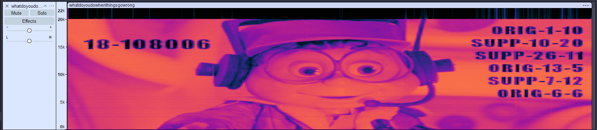
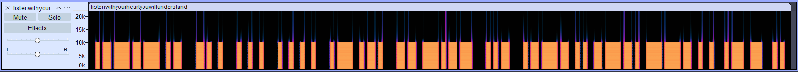
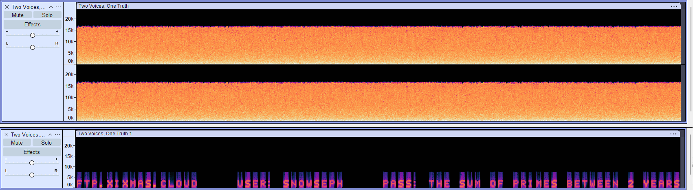
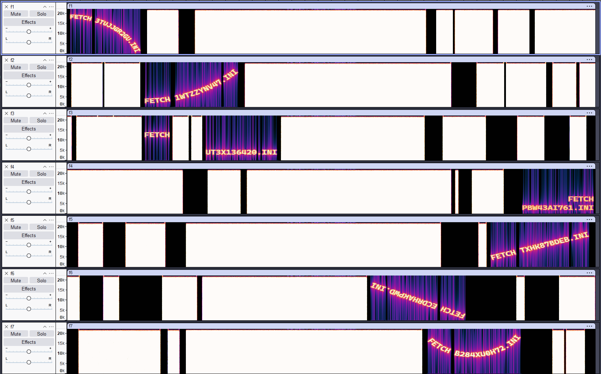
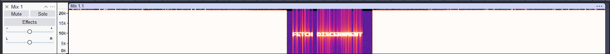
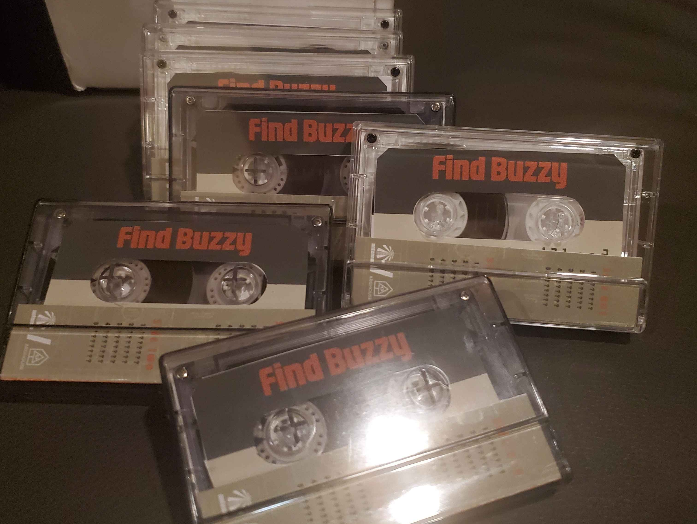
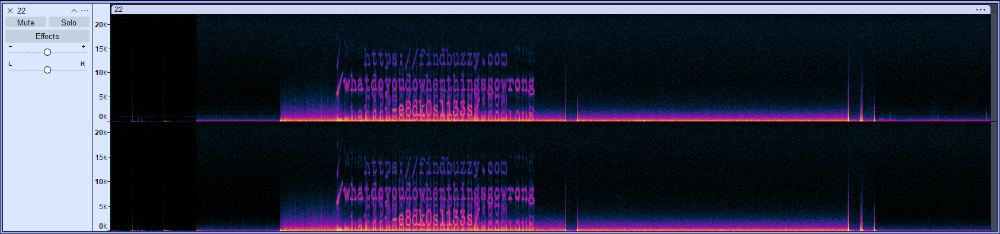

Published: 2026-08-30 Updated: 2026-08-30
0 // Overview
A spectrogram is a visual representation of the spectrum of frequencies of a signal over time. Spectrograms, especially in audio signals, are an extremely common technique used in ARGs and puzzle hunts. They are so common that, on their own, they present virtually no challenge to those with a modicum of ARG experience. This article serves as a case study of my exploration of the medium of spectrograms and dives into ways to increase variety and difficulty in spectrogram-based puzzles.
Before we dive in, I want to note that this website is a portfolio, not a cookbook. Just as a restaurant would not give you its recipes, I will not be detailing the specifics of how I've made these puzzles.
This page will be expanded with new techniques as time goes on.
1 // Moving Away From Pure Text
1.1 // Images
For a bit more visual flair, in Puzzle 22 of the Find Buzzy ARG, I created a .wav file with an image-based spectrogram. The image then contained text which amounted to a type of book cipher. As shown in the screenshot below: on the left is an identifier that can be used to find the "book", in this case a policy report. And on the right, you see the indexing key used to extract words from the policy report.

But we are not limited to just images containing ciphers; the sky really is the limit here. A spectrogram could contain an image of a rebus, or some other type of visual riddle. And you can mix and match puzzle delivery techniques to add additional variety.1.2 // Barcodes
In Puzzle 10 of the Find Buzzy ARG, I designed a .wav file for which the spectrogram displayed a standard Code 128 barcode. And scanning the barcode revealed the answer to the puzzle. This is another simple technique, but it gets you out of the cliché of simple text. Like in the example above, viewing the spectrogram is now just one step in decoding the file.

Code 128 is just one example, there are many scannable codes out there. A popular one to use in a puzzle would be a QR code.2 // Track Manipulation
2.1 // First Iteration
In Puzzle 12 of the 2025 XIXMAS ARG, I wanted to create an audio file that had to
be manipulated before the spectrogram would reveal its message. What I came up with was a stereo track called
Two Voices, One Truth, which was hosted on SoundCloud.
For context, part of the puzzle was first finding the SoundCloud account. The track appeared to be just white noise, with the album art depicting
TV static. However, if you mixed the stereo down to mono (as hinted by the track name), the noise canceled out and the true message was revealed.
In Audacity, this can be done with: Tracks > Mix > Mix Stereo Down to Mono.
The screenshots below show the original mp3 (top) with separate left and right audio that appear to be just white noise, and the resulting mixed mono track (bottom).

There is a downside to this technique, however. Some online spectrogram viewing websites automatically mix the audio down to mono before rendering the spectrogram. Giving players the answer without them even knowing that mixing was required.
2.2 // Second Iteration

To combat that issue, I took this technique to the extreme in Chapter 4 of the RUNE ARG. Players were given seven .wav files and told to find a message hidden in the noise. Each of the .wav files contained multiple sections of dense noise, sections of silence, and a single "fetch" command viewable in the spectrogram. All the immediately viewable commands were red herrings which did not help the player progress in the game.The noise in these seven tracks was carefully engineered so that a new message would be revealed only when all seven were mixed together. When mixed, all the red herring messages got buried in dense noise, but a new message appeared in the middle via destructive interference.
This is the same principle as the XIXMAS puzzle, but with additional false leads, and it completely eliminates the pitfall of certain online spectrogram viewers. To my knowledge, there are no online spectrogram tools that allow you to mix multiple files together. But even if there were, it would be a conscious choice of the player and not something they could skip without knowing.

3 // Physical Media

For the trailhead of Puzzle 22 of the Find Buzzy ARG, I created audio cassettes which were hidden in the Birmingham 8 theater in Birmingham, MI. The tapes were hidden in the hour leading up to a showing of the documentary Stolen Kingdom as part of the film's official Q&A Tour.The cassettes contained the URL for the puzzle which could only be found by viewing the spectrogram of the audio. Unlike other techniques discussed on this page, there were no additional steps the players needed to take after viewing the spectrogram. Instead, I've made it more difficult to view the spectrogram by requiring the players to use a tape deck in order to access the audio. While this medium does result in a loss of clarity in the spectrogram, it is still perfectly viable as shown in the screenshot below.
As an additional note, the cassettes were packaged with custom labels and cases. While this aspect doesn't impact the puzzle itself, it does a lot to distinguish it from other spectrogram-based puzzles and certainly improves memorability.
